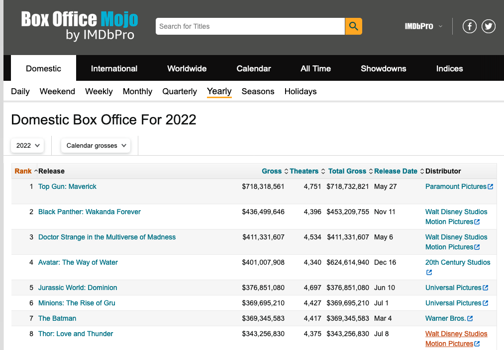

request("https://api.census.gov/data") %>%
req_url_path_append("2019") %>%
req_url_path_append("acs") %>%
req_url_path_append("acs1") %>%
req_url_query(get = c("NAME", "B02015_009E", "B02015_009M"),
`for` = I("state:*"),
key = census_api_key,
.multi = "comma")Intro to
Web Scraping
Day 20
Ways to access data from the web:
Web APIs (application programming interface): website offers a set of structured http requests that return JSON or XML files.
Screen scraping:
extract data from source code of website, with html parser (easy) or regular expression matching (less easy).
API httr request from last class
<httr2_request>
GET
https://api.census.gov/data/2019/acs/acs1?get=NAME,B02015_009E,B02015_009M&for=state:*&key=4a2344XXXXXXXXXXXXXXXXXXXXXXXXXXXXX
Body: emptyCan use your browser to go to the URL address and see what will be returned
When debugging, you can also test a single URL and build up your pipeline from there
request("https://api.census.gov/data/2019/acs/acs1?get=NAME,B02015_009E,B02015_009M&for=state:*") <httr2_request>
GET
https://api.census.gov/data/2019/acs/acs1?get=NAME,B02015_009E,B02015_009M&for=state:*
Body: emptyAPI vs Screen Scraping
API:
- Designed to be accessed by computers
- Often need to sign up for a key
- Structured set of requests, need to dig in to documentation to figure out how to access the data you need
- Often more natural structure for tidying
Screen scraping:
- Designed to be read by humans
- Can be restricted or rate-limited in terms of service
- Need to dig in to source code of the web page to figure out how to access the data that you need
Check the terms of use/service first!
Can you query this webpage?
Are there restrictions on the use of the data?
How many requests can you make per minute?
…and more…
Checking for permission to scrape
Use robotstxt::paths_allowed() to see if you can scrape the web page.
. . .
You can scrape Zillow
library(robotstxt)
paths_allowed("http://www.zillow.com")[1] TRUE. . .
But not Facebook
paths_allowed("http://www.facebook.com")[1] FALSE. . .
What websites have data about you? Think of 1-2 and see if scraping is allowed on those sites.
Hypertext Markup Language
Lots of data on the web is still available as HTML
It is structured (hierarchical / tree based), but it’s often not available in a form useful for analysis (flat / tidy).
<html>
<head>
<title>This is a title</title>
</head>
<body>
<p align="center">Hello world!</p>
</body>
</html>{rvest}

Pronounced like “harvest”
Processing and manipulation of HTML data
Installed with the {tidyverse} but not loaded automatically
library(rvest)Core rvest functions
| Function | Description |
|---|---|
read_html |
Read HTML data from a url or character string |
html_element |
Select a specified element from HTML document |
html_elements |
Select specified elements from HTML document |
html_table |
Parse an HTML table into a data frame |
html_text |
Extract tag pairs’ content |
html_name |
Extract tags’ names |
html_attrs |
Extract all of each tag’s attributes |
html_attr |
Extract tags’ attribute value by name |
Example: box office mojo
https://www.boxofficemojo.com/year/2024/
Take a look at the web page and the html source code
Chrome or Firefox: right click -> View page source
Look for the
"table"div ID or tag

Read HTML into R
page <- read_html("https://www.boxofficemojo.com/year/2024/")
page{html_document}
<html class="a-no-js" data-19ax5a9jf="dingo">
[1] <head>\n<meta http-equiv="Content-Type" content="text/html; charset=UTF-8 ...
[2] <body id="body" class="mojo-page-id-yld a-m-us a-aui_72554-c a-aui_templa ...str(page)List of 2
$ node:<externalptr>
$ doc :<externalptr>
- attr(*, "class")= chr [1:2] "xml_document" "xml_node"HTML elements
There are over 100 HTML elements:
- Every HTML page must be in an
<html>element, and it must have two children:<head>and<body> - Block tags like
<h1>,<p>,<ol>form the structure of the page - Inline tags like
<b>,<i>, and<a>format text inside block tags
. . .
We’ll often work with tables. HTML tables are composed of four main elements <table>, <tr> (table row), <th> (table heading), and <td> (table data).
If you run into one that you need to figure out, I recommend the MDN Web Docs for explanations and examples
Extract tables
Use html_element() or html_elements() to extract pieces out of HTML documents
tables <- page %>% html_elements("table")
str(tables)List of 1
$ :List of 2
..$ node:<externalptr>
..$ doc :<externalptr>
..- attr(*, "class")= chr "xml_node"
- attr(*, "class")= chr "xml_nodeset"html_element() vs html_elements()
html_elements()returns all matching elements beneath any of the inputs, flattening results into a new node sethtml_element()always returns a vector the same length as the input, using a “missing” element where needed.
. . .
Typically, we’ll use html_elements to get the overall structure for our data, followed by something else (sometimes html_element, sometimes html_table) to access what we need
Check that it’s the right table
It looks promising!
tables{xml_nodeset (1)}
[1] <table class="a-bordered a-horizontal-stripes a-size-base a-span12 mojo-b .... . .
But we don’t have a data frame yet…
tables[[1]]{html_node}
<table class="a-bordered a-horizontal-stripes a-size-base a-span12 mojo-body-table mojo-table-annotated mojo-body-table-compact">
[1] <tr>\n<th class="a-text-right mojo-field-type-rank mojo-sort-column mojo ...
[2] <tr>\n<td class="a-text-right mojo-header-column mojo-truncate mojo-fiel ...
[3] <tr>\n<td class="a-text-right mojo-header-column mojo-truncate mojo-fiel ...
[4] <tr>\n<td class="a-text-right mojo-header-column mojo-truncate mojo-fiel ...
[5] <tr>\n<td class="a-text-right mojo-header-column mojo-truncate mojo-fiel ...
[6] <tr>\n<td class="a-text-right mojo-header-column mojo-truncate mojo-fiel ...
[7] <tr>\n<td class="a-text-right mojo-header-column mojo-truncate mojo-fiel ...
[8] <tr>\n<td class="a-text-right mojo-header-column mojo-truncate mojo-fiel ...
[9] <tr>\n<td class="a-text-right mojo-header-column mojo-truncate mojo-fiel ...
[10] <tr>\n<td class="a-text-right mojo-header-column mojo-truncate mojo-fiel ...
[11] <tr>\n<td class="a-text-right mojo-header-column mojo-truncate mojo-fiel ...
[12] <tr>\n<td class="a-text-right mojo-header-column mojo-truncate mojo-fiel ...
[13] <tr>\n<td class="a-text-right mojo-header-column mojo-truncate mojo-fiel ...
[14] <tr>\n<td class="a-text-right mojo-header-column mojo-truncate mojo-fiel ...
[15] <tr>\n<td class="a-text-right mojo-header-column mojo-truncate mojo-fiel ...
[16] <tr>\n<td class="a-text-right mojo-header-column mojo-truncate mojo-fiel ...
[17] <tr>\n<td class="a-text-right mojo-header-column mojo-truncate mojo-fiel ...
[18] <tr>\n<td class="a-text-right mojo-header-column mojo-truncate mojo-fiel ...
[19] <tr>\n<td class="a-text-right mojo-header-column mojo-truncate mojo-fiel ...
[20] <tr>\n<td class="a-text-right mojo-header-column mojo-truncate mojo-fiel ...
...Parse a table into a data frame
top2024 <- html_table(tables[[1]])
glimpse(top2024)Rows: 200
Columns: 11
$ Rank <int> 1, 2, 3, 4, 5, 6, 7, 8, 9, 10, 11, 12, 13, 14, 15, 16, …
$ Release <chr> "Inside Out 2", "Deadpool & Wolverine", "Wicked", "Moan…
$ Genre <chr> "-", "-", "-", "-", "-", "-", "-", "-", "-", "-", "-", …
$ Budget <chr> "-", "-", "-", "-", "-", "-", "-", "-", "-", "-", "-", …
$ `Running Time` <chr> "-", "-", "-", "-", "-", "-", "-", "-", "-", "-", "-", …
$ Gross <chr> "$652,980,194", "$636,745,858", "$432,943,285", "$404,0…
$ Theaters <chr> "4,440", "4,330", "3,888", "4,200", "4,449", "4,575", "…
$ `Total Gross` <chr> "$652,980,194", "$636,745,858", "$474,983,975", "$460,4…
$ `Release Date` <chr> "Jun 14", "Jul 26", "Nov 22", "Nov 27", "Jul 3", "Sep 6…
$ Distributor <chr> "Walt Disney Studios Motion Pictures", "Walt Disney Stu…
$ Estimated <chr> "false", "false", "false", "false", "false", "false", "…Parse tables into data frames
If there had been multiple tables on the webpage, then we could parse them all at once using html_table()
It returns a list of data frames
table_list <- html_table(tables)
str(table_list)List of 1
$ : tibble [200 × 11] (S3: tbl_df/tbl/data.frame)
..$ Rank : int [1:200] 1 2 3 4 5 6 7 8 9 10 ...
..$ Release : chr [1:200] "Inside Out 2" "Deadpool & Wolverine" "Wicked" "Moana 2" ...
..$ Genre : chr [1:200] "-" "-" "-" "-" ...
..$ Budget : chr [1:200] "-" "-" "-" "-" ...
..$ Running Time: chr [1:200] "-" "-" "-" "-" ...
..$ Gross : chr [1:200] "$652,980,194" "$636,745,858" "$432,943,285" "$404,017,489" ...
..$ Theaters : chr [1:200] "4,440" "4,330" "3,888" "4,200" ...
..$ Total Gross : chr [1:200] "$652,980,194" "$636,745,858" "$474,983,975" "$460,405,297" ...
..$ Release Date: chr [1:200] "Jun 14" "Jul 26" "Nov 22" "Nov 27" ...
..$ Distributor : chr [1:200] "Walt Disney Studios Motion Pictures" "Walt Disney Studios Motion Pictures" "Universal Pictures" "Walt Disney Studios Motion Pictures" ...
..$ Estimated : chr [1:200] "false" "false" "false" "false" ...Scrape then wrangle
Data aren’t ready for analysis, too many character columns!
Rows: 200
Columns: 11
$ Rank <int> 1, 2, 3, 4, 5, 6, 7, 8, 9, 10, 11, 12, 13, 14, 15, 16, …
$ Release <chr> "Inside Out 2", "Deadpool & Wolverine", "Wicked", "Moan…
$ Genre <chr> "-", "-", "-", "-", "-", "-", "-", "-", "-", "-", "-", …
$ Budget <chr> "-", "-", "-", "-", "-", "-", "-", "-", "-", "-", "-", …
$ `Running Time` <chr> "-", "-", "-", "-", "-", "-", "-", "-", "-", "-", "-", …
$ Gross <chr> "$652,980,194", "$636,745,858", "$432,943,285", "$404,0…
$ Theaters <chr> "4,440", "4,330", "3,888", "4,200", "4,449", "4,575", "…
$ `Total Gross` <chr> "$652,980,194", "$636,745,858", "$474,983,975", "$460,4…
$ `Release Date` <chr> "Jun 14", "Jul 26", "Nov 22", "Nov 27", "Jul 3", "Sep 6…
$ Distributor <chr> "Walt Disney Studios Motion Pictures", "Walt Disney Stu…
$ Estimated <chr> "false", "false", "false", "false", "false", "false", "…Scrape then wrangle
top2024 <- top2024 %>%
mutate(
Gross = parse_number(Gross),
Theaters = parse_number(Theaters),
`Total Gross` = parse_number(`Total Gross`)
) %>%
separate(`Release Date`, into = c("Month", "Day"))
glimpse(top2024)Rows: 200
Columns: 12
$ Rank <int> 1, 2, 3, 4, 5, 6, 7, 8, 9, 10, 11, 12, 13, 14, 15, 16, …
$ Release <chr> "Inside Out 2", "Deadpool & Wolverine", "Wicked", "Moan…
$ Genre <chr> "-", "-", "-", "-", "-", "-", "-", "-", "-", "-", "-", …
$ Budget <chr> "-", "-", "-", "-", "-", "-", "-", "-", "-", "-", "-", …
$ `Running Time` <chr> "-", "-", "-", "-", "-", "-", "-", "-", "-", "-", "-", …
$ Gross <dbl> 652980194, 636745858, 432943285, 404017489, 361004205, …
$ Theaters <dbl> 4440, 4330, 3888, 4200, 4449, 4575, 4074, 4170, 3948, 4…
$ `Total Gross` <dbl> 652980194, 636745858, 474983975, 460405297, 361004205, …
$ Month <chr> "Jun", "Jul", "Nov", "Nov", "Jul", "Sep", "Mar", "Jul",…
$ Day <chr> "14", "26", "22", "27", "3", "6", "1", "19", "29", "8",…
$ Distributor <chr> "Walt Disney Studios Motion Pictures", "Walt Disney Stu…
$ Estimated <chr> "false", "false", "false", "false", "false", "false", "…Scraped data will almost always need wrangling/cleaning
- Are numeric columns numeric?
- Are date columns dates?
- Are factor and string columns treated correctly?

. . .

Source: Playing the Whole Game, Kim & Hardin
What next?
Data we want to access isn’t always stored in tables
- Example: Carleton course search
More next class!